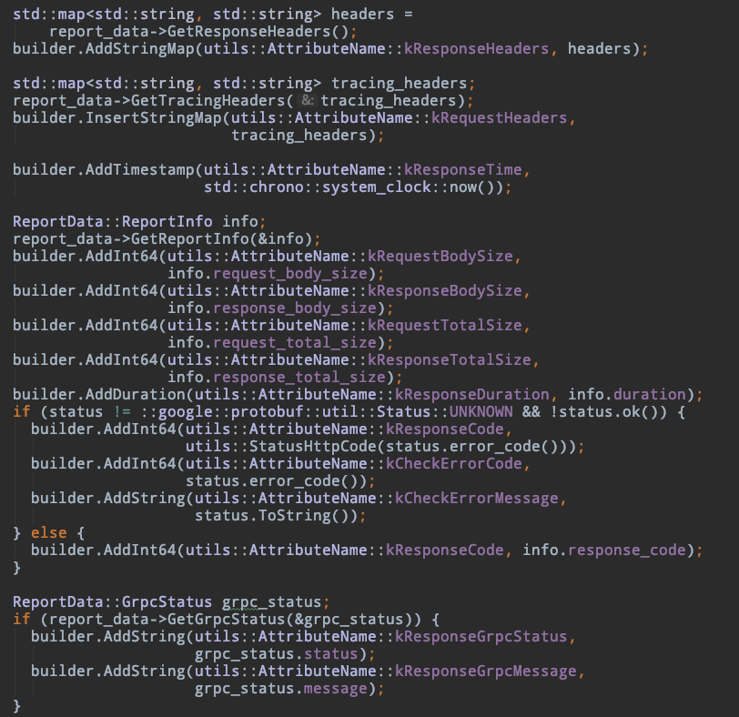
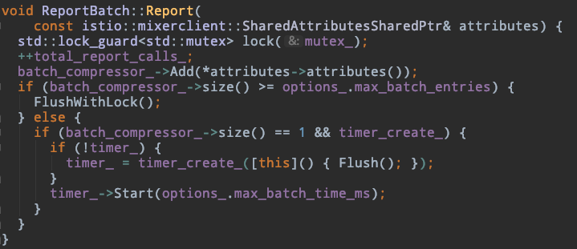
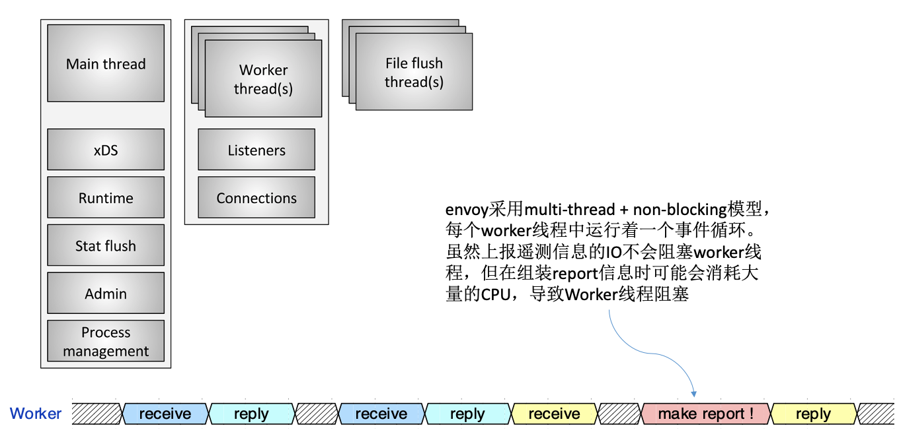
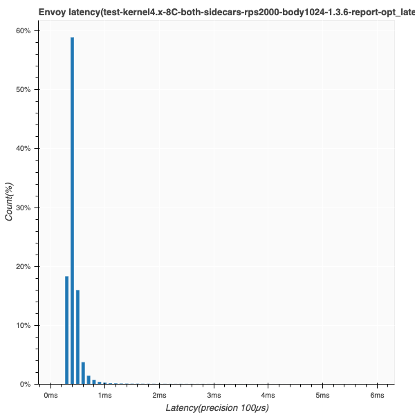
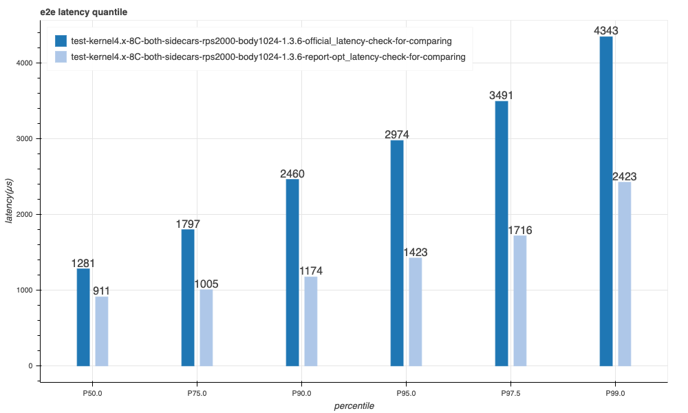
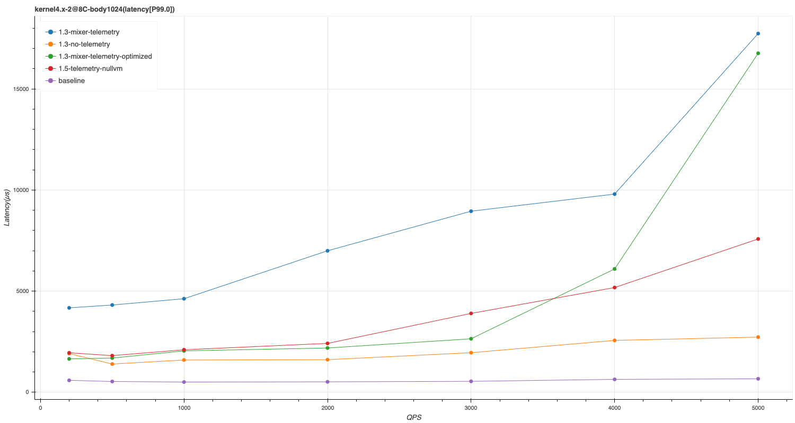
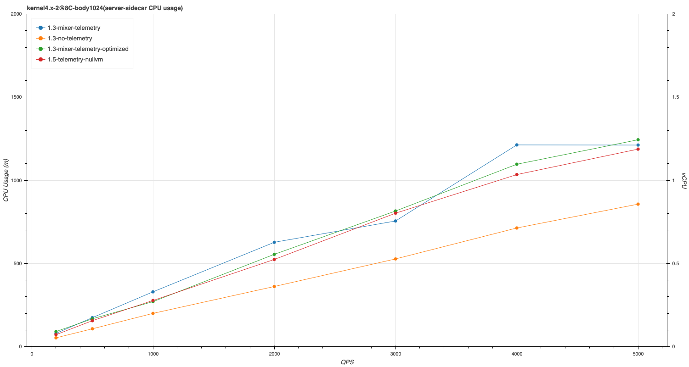
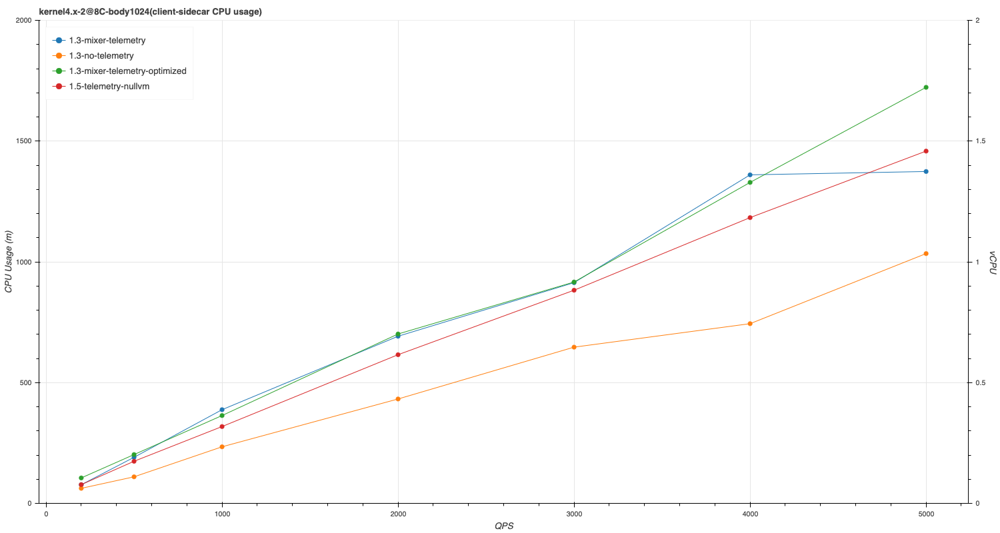
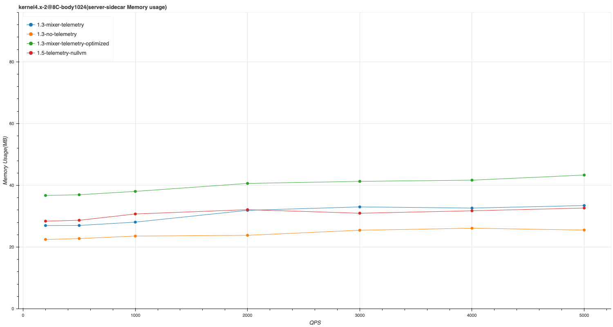
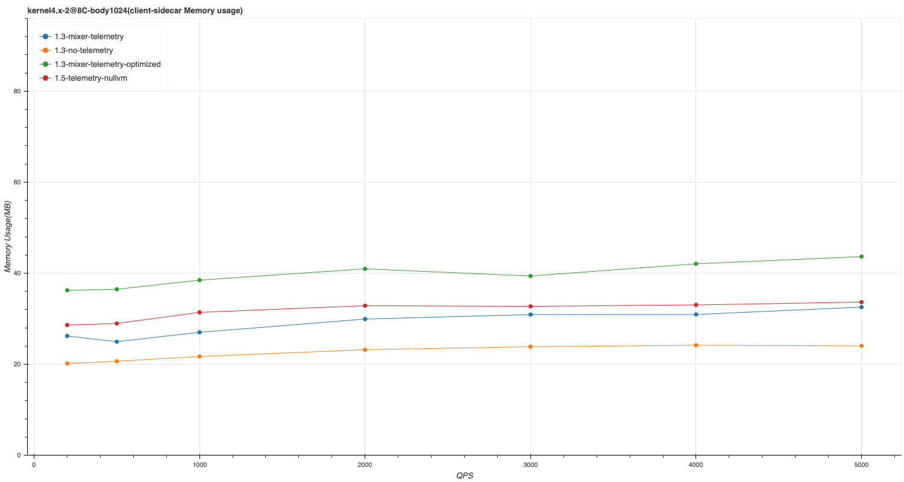

2017 下半年，非侵入式微服务架构迅速吸引开发者眼球， ServiceMesh 进入飞速发展通道，至今已近三年。Istio 快速迭代，只经历了 14 个月便从 0.1 进化到 1.0 版本，这赶上了 Kubernetes 崛起时的迭代速度。本文分享了一些对 Istio 数据面进行性能测试与优化的经验，加深对 Istio 的理解。
背景动机
从 2018 年 7 月到现在一路高速发展，却没能复制 Kubernetes 的历史，成为标准。虽然 Istio 继续保持着绝对影响力，但很多用户一直处于对其调研的过程中，并没有广泛地使用起来。这其中的原因有很多，「性能不好」可能是用户不敢大规模使用 Istio 架构的关键因素之一。Istio 社区和官方都对性能进行了一些测试，对其性能同样不太满意， 更是加重了大家对 Istio 甚至 ServiceMesh 的观望态度。在阅读了一些测试报告和文章时，我们发现 Istio 数据面代理对服务间调用的延时影响较大可能已经形成共识，但通过社区的资料，很难深刻理解 Istio 性能问题的原因。因此，我们希望更细致地测试分析 Istio 数据面性能，得到一些有价值的经验和数据，以期在此基础上进行一些优化。
架构简介
Istio 在设计上分为了控制面和数据面。
控制面可以理解为各种配置管理和协调服务。比如，控制面自动从 Kubernetes 中提取 Service 信息，使用 xDS 协议将其下发到数据面，帮助数据面代理完成服务发现。
数据面完成各种具体的动作。如路由、熔断等流量管理，生成遥测信息进行上报，策略实施等。
图 1: Istio 架构示意图
数据面以 sidecar 模式实现，这是 Istio 为微服务带来强大能力却不用修改服务本身的关键：即在每一个服务实例旁，它都会运行一个 envoy 代理程序，将原来需要在服务内实现（如服务发现、负载均衡、监控追踪等）的功能移到独立进程中完成。
图 2: 在 Kubernetes 平台上，Pod 内增加了一个运行着 envoy 代理的容器，服务流量需通过 envoy 进行转发
注： 对于接下来的性能研究，文中出现的术语 proxy、sidecar、envoy 可以视为同一个意思。
性能测试
Istio 本身架构比较复杂，作为性能研究领域的门外汉，面对这样的复杂系统，如何下手是第一个问题。 一开始，我们便带着两个问题进行思考：
- 性能的定义是什么，如何衡量 istio 性能好与不好？
- istio 性能不好有具体的应用场景和问题表现吗？
吞吐量上不去、延时高、消耗 CPU 资源过多都是性能问题，这些问题可能是独立的，也可能相互之间有内在联系。 终端用户体验是否友好的的核心因素之一是延时。Istio 的核心能力是管理微服务架构，数据面 sidecar 会给服务调用增加一些延时， 随着业务的发展，企业的微服务可能会变得异常复杂，虽然每个 sidecar 只增加一点点延时，但随着调用链路深度的增加，叠加的延时可能会达到无法接受的地步。 因此我们更关心 sidecar 对服务间调用产生的影响，它将最终影响服务质量。 istio 数据面有作为 ingressgateway 的 envoy，也有作为 sidecar 管理服务间流量的 envoy 代理。两者有明显区别，前者可能面对高并发问题，需要处理大量连接，每个连接接只有少量的请求， 而后则恰恰相反，常常使用长连接进行完成 RPC 过程。我们先聚焦于研究 sidecar 对服务间调用带来的潜在高延时问题，作为接入层的 ingressgateway 暂时不作考虑。
工具与方法
测试 sidecar 带来的延时影响，需要注意各种变量和干扰因素。例如：
选择合适的模拟服务来进行压测
istio 社区有 bookinfo 例子，linkerd 使用 emojivoto 作为模拟服务进行性能测试。 bookinfo 和 emojivoto 本身消耗资源很多，处理请求的时间较长。当我们对 envoy 进行调优时，通过 e2e 测量延时来确认优化效果， 但模拟服务本身高延时的正常波动可能会掩盖 envoy 调优的差异，导致难以确认优化是否合理。因此我们单独实现了一个简单的 HTTP 服务 mesh-mocker， 它接收到请求之后，回传 Request Body，同时将 HTTP Request Headers 编码为 json 字符串追加到 Response Body 中。
不同组件互相影响
Istio 控制面的组件 Mixer 消耗资源较多，测试过程中需保证它不占用压测工具和模拟服务的资源。
Istio 功能取舍
如果开启 TLS 加密流量，数据面必将消耗更多 CPU 资源；Check 策略会同步调用远端服务，导致延时明显增加。我们在测试中都将这些功能关闭。
需要深入理解压测工具的模型
压测工具的线程模型、发包模型也有区别，比如 fortio 使用 gorouting 来进行并发，适合模拟大量连接的场景；大多数压测工具有 Coordinated Omission 问题，导致压测报告的结果比实际环境中要好；压测工具如果使用带 GC 语言的实现，可能也会影响测量时间的精度，导致结果不稳定。
Coordinated Omission 问题
什么是 Coordinated Omission？简单地说就是我们进行压测时，可能只是测量了「服务时间」，忽略了「排队等待时间」。而真实用户体验到的延时是「响应时间」，包含「服务时间」与「排队等待时间」两者之和。
(图中 queue 只是一种抽象，例如它可以来源于链路中的 buffer，并发系统中的资源竞争等)
压测工具通常没有处理 OC
问题，它们大多定时发送一个请求，记录开始时间(begin_time)，然后接收响应并记录结束时间(end_time)，这样便得到一个请求的延时(end_time - start_time)。当新的发送周期到来时，继续发送下一个请求，记录延时，如此循环…
这种发包策略下当某个请求出现响应过慢，其响应时间点已经超过下一个发包周期开始时间点，导致压测工具延后了原本应该发送的请求，降低了实际测试 RPS。最终，我们测量的数据中只有少部分请求的延时增加了（发生阻塞的那些请求），而真实环境中则可能有多个排队中的请求因为前面的请求阻塞而出现延时增加，用户体验到响应变慢的概率比压测环境报告的数据更大！

图片来自: https://bravenewgeek.com/tag/coordinated-omission/
解决 OC 问题有多种策略，压测工具不等待先前请求响应而是直接定时发送请求(nighthawk 中的 open-loop 模式即是如此)，也可以在出现响应延时增大后加快发送频率（wrk2 使用的方法），还可以在数据处理时进行拟合补充，其目的都是为了让压测得到的数据更接近用户真实环境。
压测工具
社区有非常多压测工具，如 ab, jmeter, fortio, wrk2… 我们最终选择了
Envoy 官方开发的 nighthawk
。 nighthawk
由在性能测试领域具有丰富经验的工程师所开发，它还具有诸多优点：
- 开源可扩展，容易进行二次开发
- 支持 HTTP2，可以进行 grpc 压力测试
- 具有非常好的时间精度和伸缩性
- 基于 envoy 实现，没有 GC 的影响
- 可以非常均匀地发送请求，支持 open-loop 和 closed-loop 两种模式
自动化脚本
在调优测试过程中，我们会不停地进行
假设-->开发-->测试-->数据对比-->再假设
循环，因此，开发好自动化脚本，将每一次测试用例的参数，环境，结果等信息进行记录保存是非常必要的，否则在大量的测试之后，我们很快就会迷失在各种测试用例的数据中。
测试过程需要调整 sidecar 的 yaml 配置参数，包括 envoy 镜像地址、资源、启动参数等等，甚至还需要增加挂载 host 目录来保存 envoy 打点数据。修改这些配置是一个麻烦的事情，因为相应的 yaml 配置都是由 istio 通过模板 render 生成。虽然我们可以直接修改模板来实现对测试参数的修改，但这会有非常多的缺点:
- 不同的 istio 版本需要分别修改，管理复杂；
- 模板中增加的配置需要注入 render 时的参数，这些参数值在注入 sidecar 时如何传递进去非常麻烦，甚至需要修改自动注入组件；
我们采取另外的方案来实现：通过 istioctl 完成本地注入生成 yaml，再使用 kustomize 对 yaml 文件进行结构化修改，得到最终运行测试的 Kubernetes yaml 文件。
例如，修改 sidecar 中 envoy 镜像地址，可以通过如下的 transformer 实现:
apiVersion: builtin
kind: ImageTagTransformer
metadata:
name: imagetag_not_important_b
imageTag:
name: istio/proxyv2
newName: ccr.ccs.tencentyun.com/mesh-perf/istio-proxy-v2
newTag: 1.3.6sidecar_image_transformer.yaml
apiVersion: kustomize.config.k8s.io/v1beta1
kind: Kustomization
resources:
- resource-sidecar-injected.yaml
transformers:
- sidecar_image_transformer.yamlkustomization.yaml
kustomize 支持插件，某些操作内置的 plugin 无法完成，可以通过自定义 plugin 实现。 例如，下面的 yaml 格式内容描述了对 istio-proxy 容器进行添加 initContainer、修改 security、删除 resource limits 等操作。 这些 yaml 内容使用的是 json patch 规范，在自定义的 kustomize plugin 中，我们将其转变为 json 格式之后，使用 json-patch 工具执行对 istio-proxy 容器配置的修改操作。
- op: add
path: ${proxy_container_path}/securityContext/privileged
value: true
- op: add
path: ${proxy_container_path}/securityContext/allowPrivilegeEscalation
value: true
- op: replace
path: ${proxy_container_path}/imagePullPolicy
value: Always
- op: remove
path: ${proxy_container_path}/resources/limits
- op: add
path: ${proxy_container_path}/volumeMounts/-
value:
mountPath: /data
name: statistic-data
- op: add
path: /spec/template/spec/initContainers/-
value:
args:
- -c
- "mkdir -p /data/tmp; chmod -R 777 /data/tmp; chown -R 1337 /data/tmp"
command:
- /bin/sh
image: ubuntu:xenial
imagePullPolicy: IfNotPresent
name: create-host-data-dir
resources: {}
securityContext:
privileged: true
runAsNonRoot: false
runAsUser: 0
volumeMounts:
- mountPath: /data
name: statistic-data${proxy_container_path}是 istio-proxy
容器的文档对象路径，通常是
/spec/template/spec/containers/1
最后，整个测试脚本按下面的流程进行实现：
- 安装 Istio
- 使用 Istioctl 注入本地 yaml(如客户端 nighthawk yaml，服务端 mesh-mocker yaml)；
- 使用 kustomize 修改 yaml 中的 istio-proxy 配置；
- 提交修改后的 yaml 到 Kubernetes 集群运行；
- 收集测试节点的数据（延迟和 envoy 打点日志）；
- 删除 nighthawk 和 mesh-mocker，清理环境；
环境
测试环境使用 5 台 8C16G 节点的 tke 集群。istio-telmetry 组件消耗的资源较多，服务端 mixs 消耗较多，1000QPS 大概需要消耗 1200m CPU，因此使用两个节点，以满足超过 7000QPS 的测试压力；pilot 等其它控制面组件使用一个节点进行部署； nighthawk 和 mesh-mocker 分别占用一个节点。自动化脚本打包在一个镜像中，每次在控制面组件所在节点运行。
测试中限制了 nighthawk、mesh-mocker、envoy 都使用 2vCPU。同时，考虑到相同资源下，多核机器上 worker 线程数对并发度有直接影响，最终也会影响延时，因此我们对每个组件的工作线程数也限制为 2。这样配置后，在 OS 调度下，几乎所有组件都是独立运行，不会互相影响，更容易评估使用 Istio 后 envoy 产生的影响。
Envoy 打点
Istio 数据面带来了明显的延时，把消息在链路中各个阶段的延时统计出来，是进行优化的重要依据。一开始我们思考利用内核态工具如 bpftrace 进行分析，但请求消息在 envoy 中进行了多次转发，内核态很难追踪应用层会话，统计时间并不方便，因此我们决定在 envoy 内部打点记录时间，测试结束后通过离线脚本计算消息在 envoy 中进行处理的延时。
client 请求 server 是，每条消息 Request 依次经过 envoy
中的3，4，5，6几处，通过
readv 和 writev 系统调用读取或发送消息，Response 以相反的顺序经过
envoy。
我们将 Request 经过打点位置的时间戳记录为t(*)，将
Response 经过的时间戳记录为t'(*)，则一条消息在两个
sidecar(envoy)中消耗的时间总计为：t(4)-t(3) + t'(3)-t'(4) + t(6)-t(5) + t'(5)-t'(6)。
为了防止打点带来过多的额外损耗，时间戳直接记录在预分配的连续内存（数组）中，如果使用
1w QPS 测试 10 分钟，每个 envoy 最多占用 280MB 内存，我们增加了 proxy
容器的内存资源配置，以保存这些时间戳数据。时间戳应该记录在内存中什么具体位置呢？这是通过给每条消息增加唯一x-idx作为其数组下标实现的，每条消息的打点时间戳直接写入指定位置内存，非常高效。
测试结果
envoy 延时分布
我们使用 2000QPS 进行测试，利用 Envoy
打点得到了上面的延时分布。从这个分布中，我们发现了一个关键信息：图中1ms ~ 2ms之间的延时分布有隆起现象。高延时部份应该是一些长尾请求造成，应该符合典型的幂律分布，但测试结果表明
Envoy 造成的延时分布不符合这个特征！
分析优化
经过一些测试之后，我们发现测试过程中 CPU 资源是 Envoy 的性能瓶颈，遂猜测 Envoy 里面有某种任务在长时间运行，来不及转发 in-flight 的消息，造成这些消息转发不及时。随后，我们对高延时部份的数据在时间分布上进行分析，发现其分布较均匀，因此将目光转移到一些周期性运行的定时任务上。在对 Envoy(istio-proxy)代码进行分析后，我们发现 istio 遥测功能(mixer)在 sidecar 中会消耗较多的 CPU，符合猜测:
属性提取中有大量的 map 操作和字符串拷贝操作
 为了节省网络带宽，envoy 中对属性上报进行批量处理并压缩

结合 envoy 的多线程架构，mixer 这种实现方式会造成 worker 忙于处理上报遥测工作，阻塞业务消息的转发，造成一些请求延时明显增加:

分析出问题原因之后，我们采用如下的方案进行优化：
- 在 Envoy 中增加独立的 AsyncWorker，专门处理占用 CPU 但不紧急的逻辑；
- AsyncWorker 线程以低优先级运行（SCHED_IDLE），使其随时可被抢占；
- Worker 保存任务上下文，将其提交到队列中暂存，AsyncWorker 定时拉取处理；
- 任务队列实现保证 lock-free 及 unbounded 特性，防止意外阻塞 Worker 线程；
经过优化之后，Envoy 内部的延时分布有明显改善：

总体延时也有一些改善(下图浅蓝色为优化后)：

通过异步化处理遥测上报操作，我们虽然在延时上获得了明显的优化，但对 envoy 占用的 CPU 资源却没有改善，这对大部份应用来说还是不可接受的，随着 mixer-less 的落地，我们将优化方向转移到降低 Envoy CPU 消耗，当前的 AsyncWorker 架构则可以作为通用组件继续保留，与后续优化进行融合，以达到最低的延时。
Istio 数据测试对比(已更新，包含 1.5 遥测)
我们测试了以下几种情况:
baseline
没有 sidecar。测试用的模拟服务是简单的 HTTP echo 服务，延时比较稳定，对比 baseline 可评估引入 sidecar 后增加的延时。
1.3-no-telemetry
关闭了遥测功能，sidecar 只做流量转发功能，这时候我们丧失了 istio 带来的「可观察性」能力。
1.3-mixer-telemetry
使用 mixer 实现的遥测功能，该方案已过时，但目前 tke-mesh 基于 istio 1.3.x 实现，还在使用。
1.3-mixer-telemetry-optimized
对 mixer 遥测上报阻塞问题进行优化，可降低 envoy 造成的延时。
1.5-telemetry-nullvm
1.5 默认的遥测方案（没有使用 Wasm，但共享实现遥测的代码）
吞吐能力
2vCPU 测试下，1.3 版本使用 mixer 实现遥测(1.3-mixer-telemetry)，其最大 QPS 大约为 7000 左右；1.5 版本使用 nullvm 的方式(1.5-telemetry-nullvm)则有 2000QPS 的提升，达到 9000 左右；关闭 telemtry 之后(1.3-no-telemetry)，QPS 峰值达到 13000 左右；tke-mesh 阻塞优化版的 QPS 有所下降，只有 6000 左右，这是因为将上报任务的数据迁移到异步线程中有所消耗。
QPS 达到峰值时的 CPU 资源已成为瓶颈，实际生产环境中我们并不会让系统在如此搞负载下运行。下文的图表中我们只关注 5000QPS 以下的数据。
延时
P90 延时
P99 延时 
使用 istio 之后，较低 QPS 负载下延时增加不多，随着 QPS 的增加延时逐步增大。其中，使用 mixer 实现的遥测对调用延时影响最明显，即使 tke-mesh 进行一些优化后，在高负载情况(5000)下，P99 也明显增加。istio-1.5 使用 mixer-less 的方案，其延时有明显的改善。
Envoy cpu 消耗
server-side cpu 消耗 
client-side cpu 消耗 
可以看出，遥测功能会增加 30%左右的 CPU 消耗，即使 1.5 版本引入 mixer-less 的遥测方案，CPU 消耗也只在 client 侧有一些降低。
Envoy memory 消耗
server-side memory 
client-side memory 
Envoy 消耗的内存不多，并没有随 QPS 增加而增加，AsyncWorker 方案大约增加了 10MB 的内存占用，没有太大的影响。
总结
ServiceMesh 发展至今，性能问题横在面前，阻碍着其大规模应用。Istio 各版本中对性能的一些优化措施没有太好的效果，属于填初期设计的坑：Mixer Cache 降低 Check 对 Server 的压力，但在实际中可能并有什么效果；遥测上报数据进行 delta-Encoding 和 Compress 优化操作，以降低遥测功能产生的网络流量，但带来复杂性的同时又消耗掉可观的 CPU；如今推倒重来用 Wasm 在 proxy 中实现原来 mixer 的功能，去掉了 mixer-server 组件能节约一大笔资源，但数据面性能优化却不是主要目标，其性能并没有质的改变，反而随着 Wasm 引入而带来的灵活性，大家的目光反而被可扩展性引开。Istio 在性能上的缓慢改进的表现，不知道又会损害多少工程师对它的信心，影响其发展速度。
从 2019 年下半年开始，我们在 Istio 性能方面逐步投入了更多的精力进行研究，年初大概完成了文中的工作，但 Istio 发展太快，我们随后将精力放在 mixer-less 版本的调研上，一直没有总结，回头来看，走过的路弯弯折折，虽成果不多，但收获不少经验，这帮助我们理解了 Istio 数据面性能极限在哪，有多少优化空间，因此我们也决定在接下来的 tke-mesh 版本中，独立开发数据面的遥测组件，以提供一个性能更好的 sidecar 代理。